MultiFly: A Real-World Multimodal Aerial Dataset with Annotation-Efficient Label Transfer and Cross-Modal Semantic Consistency
Unmute the video to listen to a 2-minute summary.
🆘 Challenges
- Underrepresented domain: UAV data remains scarce in large-scale multimodal datasets, although aerial viewpoints, object scales, and scene statistics differ fundamentally from ground-level data.
- Missing modalities: Existing aerial datasets provide only one or two modalities. No public real-world low-altitude dataset offers synchronized frame-wise semantics across RGB, thermal, LiDAR, and radar, which substantially limits aerial scene understanding.
- Costly, inconsistent annotation: The modalities differ significantly in geometry and sampling, so annotating each sensor separately is expensive and can introduce conflicting labels.
💡 Our Approach
- Four-modal platform: A synchronized and calibrated UAV sensor rig captures RGB, thermal, LiDAR, and radar together with GNSS-RTK/INS poses, yielding 17,272 multimodal samples.
- Label transfer: With 3D geometry as a shared semantic interface, labels from only 0.67% of manually annotated RGB images propagate to all four modalities, automatically annotating 17,157 RGB images, 17,272 thermal images, 840M LiDAR points, and 3.4M radar points.
- Label quality: 89.93% agreement with held-out manual ground truth and 90.94% cross-modal semantic consistency, without manual correction.
- Benchmarks: Semantic segmentation baselines for all four modalities.
Abstract
We introduce MultiFly, a real-world, low-altitude UAV dataset for semantic perception across RGB, thermal, LiDAR, and radar modalities. MultiFly provides 17,272 synchronized samples from four suburban scenes with frame-wise annotations for 15 semantic classes, together with calibration and GNSS-RTK/IMU measurements. To avoid costly and inconsistent modality-specific annotation, we propagate labels from only 115 manually annotated RGB images through shared geometric representations to all four modalities. This approach generates semantic labels for 17,157 additional RGB images, 17,272 thermal images, 840M LiDAR points, and 3.4M radar points. Transferred annotations achieve 89.93% average agreement with held-out manual annotations, and 90.94% average semantic consistency across all six modality pairs. We further establish semantic segmentation benchmarks for all four modalities, revealing distinct architectural behavior for dense LiDAR and sparse radar data. Taken together, MultiFly provides a scalable foundation for multimodal aerial perception and, to the best of our knowledge, the first public real-world low-altitude aerial benchmark that combines consistent frame-wise semantic annotations for RGB, thermal, LiDAR, and radar.
MultiFly Platform
The MultiFly sensor rig integrates an RGB camera, a thermal camera, a spinning LiDAR, two radars, and a GNSS-RTK-aided inertial navigation system (INS). Mounted on an EmQopter Q6500 UAV and pitched 45° downward, it jointly observes the flight direction and the ground below, recording all perception data at 10 Hz.
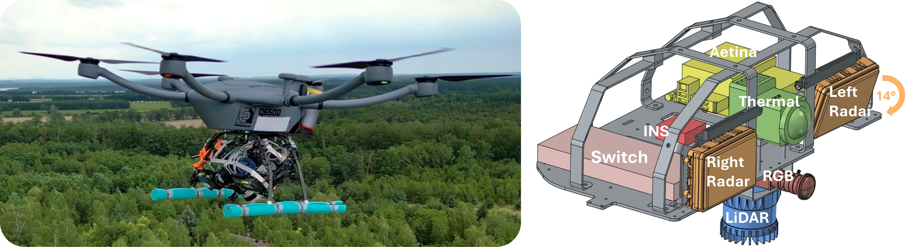
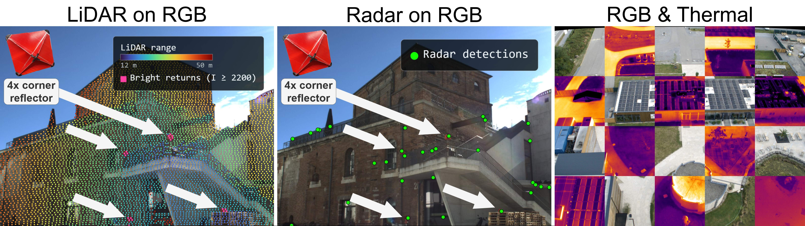
⏱️ Time Synchronization
- All sensors share a GNSS-disciplined time base via the Precision Time Protocol (PTP), with the INS as grandmaster.
- Acquisition is aligned with the LiDAR's 10 Hz scan cycle: the rotating LiDAR hardware-triggers the RGB camera so that exposure coincides with the LiDAR beam passing through the camera's field of view.
- Radar epochs are phase-compensated to within ±3 ms of the LiDAR, while the thermal camera, which lacks hardware triggering, is controlled via timestamped GigE Vision Scheduled Action Commands.
📐 Calibration & Registration
- All extrinsics form a calibration tree rooted at the LiDAR: RGB–LiDAR from natural landmarks, radar–LiDAR from corner reflectors, and RGB–thermal from stereo calibration.
- A steel plate with plotter-cut vinyl squares makes checkerboard corners visible in the thermal band for intrinsic calibration.
- RGB and thermal images are registered at pixel level via the shared 3D reconstruction and the fixed RGB–thermal extrinsic.
Annotation-Efficient Label Transfer
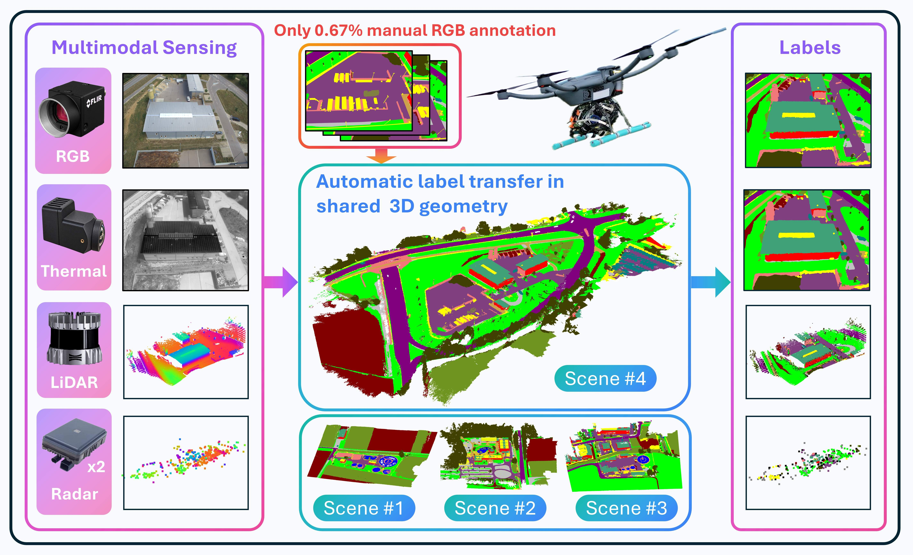
Annotating 4 modalities by hand is expensive and inconsistent, so we let 3D scene geometry do the work. Instead of labeling each sensor independently, we manually annotate just 0.67% of RGB images and automatically transfer their labels across all sensors. To achieve this, the RGB labels are grounded in a common 3D reference frame, which acts as a shared semantic interface, effectively connecting all observations across viewpoints, time, and sensing modalities. This propagates the sparse manual labels to the remaining RGB images, all thermal images, and all LiDAR & radar points. Crucially, this process is fully automatic: no thermal image or 3D point is manually annotated.
The MultiFly Dataset
MultiFly comprises four suburban scenes in the metropolitan area of Ingolstadt, Germany, recorded in summer under sunny and cloudy conditions. Each scene is surveyed at 30m and 50m altitude along automated double-grid trajectories. In total, MultiFly provides 17,272 synchronized samples covering 56,700 m2, each consisting of an RGB image, a thermal image, a LiDAR scan, and measurements from both radars, with frame-wise annotations for 15 semantic classes. Calibration parameters, synchronization metadata, and the complete 100 Hz navigation stream of the GNSS-RTK-aided INS are provided alongside the perception data.
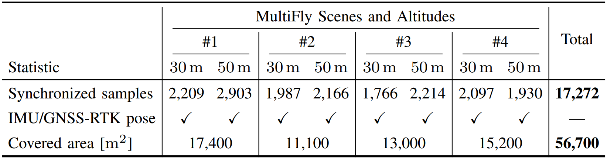
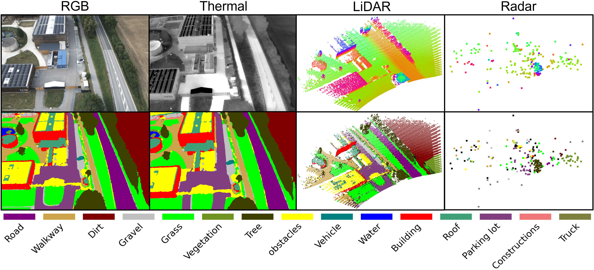
MultiFly in Comparison
Real-world UAV datasets with frame-wise semantic labels remain fragmented across sensing modalities. IndraEye, MVUAV, CART, Kust4K, and SegFly pair RGB with thermal imagery, while UAVScenes combines RGB with LiDAR. MultiFly is the only dataset that unites RGB, thermal, LiDAR, and radar with IMU and GNSS measurements, while providing cross-modally consistent semantic labels that require no manual correction.
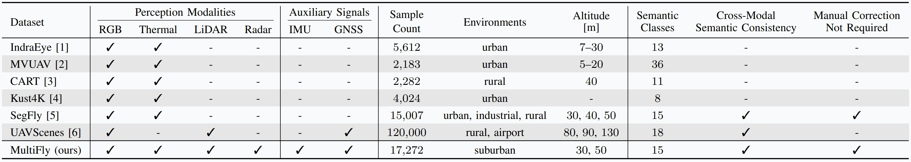
Label Quality & Cross-Modal Consistency
🎯 Label Transfer Accuracy
- Transferred labels are compared against frames that were manually annotated solely for evaluation and held out from data generation.
- 89.93% on average, with RGB and thermal on par with SegFly.
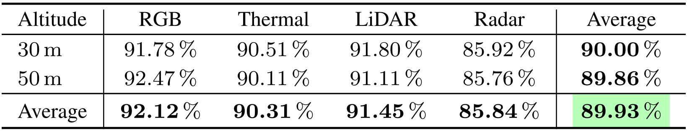
🔗 Cross-Modal Semantic Consistency
- Labels are compared across all six modality pairs, without intermediate 3D representations or additional manual ground truth.
- 90.94% on average, with LiDAR–radar agreement robust to the association radius.
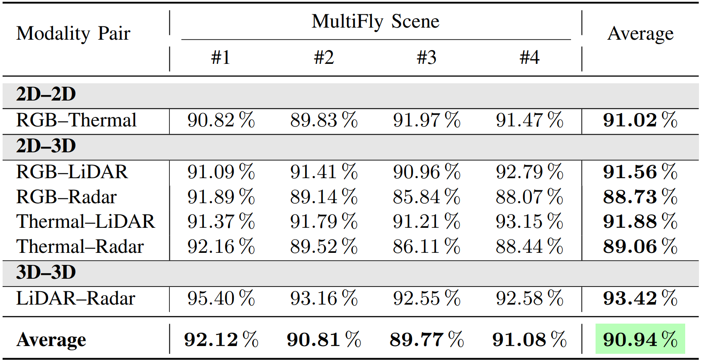
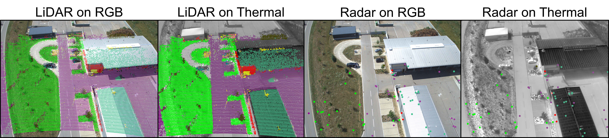
Benchmarking RGB & Thermal Semantic Segmentation
We benchmark UPerNet, SegFormer, and Firefly under a strict held-out-scene protocol, training on scenes 1–3 and evaluating on scene 4. Following SegFly, training comprises RGB training, RGB-to-thermal adaptation on registered MultiFly RGB–thermal pairs, and thermal fine-tuning. Firefly achieves the strongest performance on both modalities, with 44.05% mIoU for RGB and 40.24% mIoU for thermal, and the qualitative predictions confirm that MultiFly supports effective semantic segmentation across both modalities.
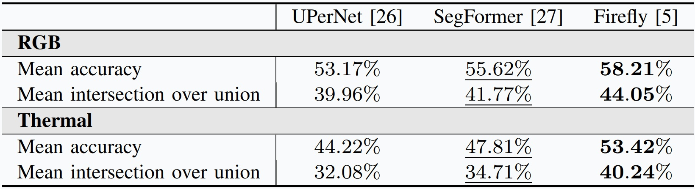
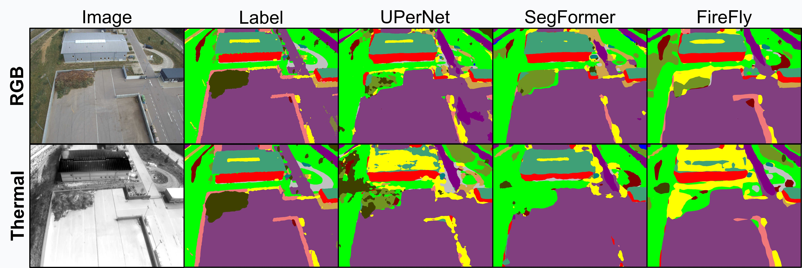
Benchmarking LiDAR & Radar Semantic Segmentation
We benchmark SparseUNet (SpUNet), LitePointTransformer (LitePT), and PointTransformerV3 (PTv3) independently on LiDAR and radar, using intensity as an additional LiDAR feature, and radar cross section & Doppler velocity for radar. PTv3 performs best on LiDAR with 37.09% mIoU, whereas SpUNet achieves the strongest radar performance with 14.50% mIoU. Established sparse convolutions can thus outperform recent attention-based models on sparse radar point clouds, providing a promising initial benchmark for radar semantic segmentation.
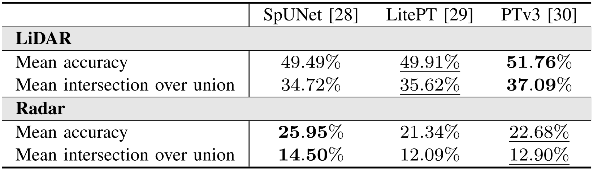
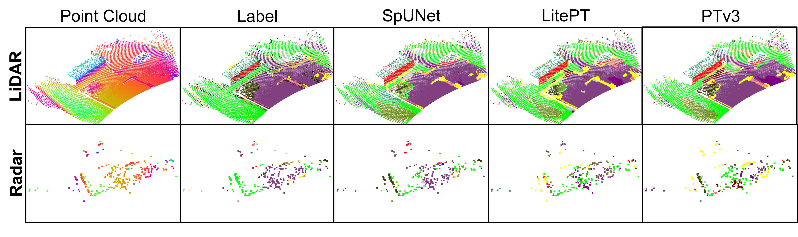
BibTeX
@misc{gross2026multiflyrealworldmultimodalaerial,
title={MultiFly: A Real-World Multimodal Aerial Dataset with Annotation-Efficient Label Transfer and Cross-Modal Semantic Consistency},
author={Markus Gross and Andreas Greiner and Taehyoung Kim and Sivasubiramaniam Subbiah and Tomaž Cotič and Conrad Christoph and Oussema Dhaouadi and Simon Zieher and Surya Vijaya Kumar and Gordon Elger and Henri Meeß and Olaf Wysocki and Paul Spannaus and Daniel Cremers},
year={2026},
eprint={2610.10359},
archivePrefix={arXiv},
primaryClass={cs.RO},
url={https://arxiv.org/abs/2610.10359},
}